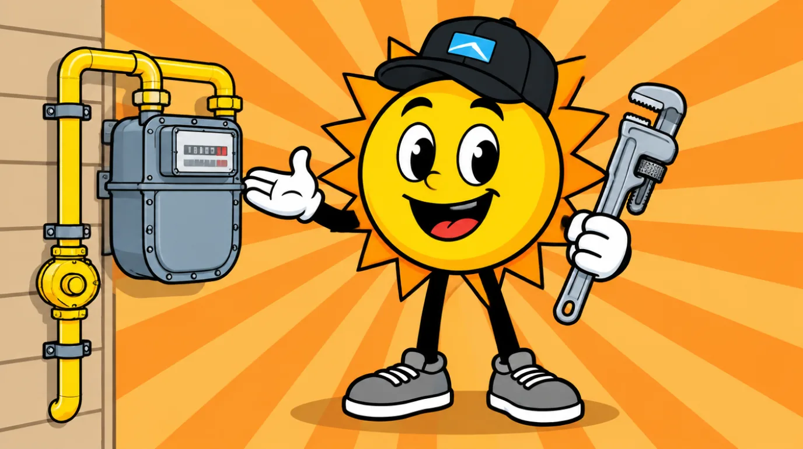

385.853.8116

Although the Wasatch Front climate is mostly dry, heavy winter snow can impact outdoor gas lines over time, while humidity and other factors can corrode indoor gas lines. If you have a corroded gas line, it’s important to know whether (and when) to replace it. The licensed plumbers at Sunny Home Services can help with all your gas line needs, and we have useful information to help you decide whether to replace rusty or corroded gas lines in or around your home.
Whether you live in the heart of Salt Lake City, Logan, or another area of the Wasatch Front, you may wonder: Are rusty gas pipes dangerous? Here’s why this issue can pose a significant hazard:

Gas lines typically last 20 to 100 years, depending on the metal used and where they’re installed (indoors vs. underground). Look for these signs that may indicate your gas line is corroded:
So, should a corroded metal gas line be replaced? The answer depends on the severity and the depth of the rust on your lines. If the rust appears very light or only on the surface, and the metal underneath looks solid, feels smooth, and remains thick after a wire-brush test, it may only need a thorough cleaning. You can also treat mild corrosion with a special rust converter or primer and protective metal paint. More severe, deep corrosion that has begun to thin the pipe wall requires replacement. Look for visible signs like pitting, heavy flaking, or deep craters in the pipe. These are signs that the line is structurally compromised and should be replaced by an experienced professional as soon as possible.
Homeowners should never attempt to repair a gas line themselves and should always contact an experienced professional for assistance. A licensed plumber will check for the visible signs mentioned, but they also go much deeper to confirm the scale of the problem. The plumber looks for several things when inspecting a corroded gas line, including:

Not sure where to start? A technician can look at it the same day and tell you what it needs.
Book NowRemoving and replacing a gas line is a meticulous process that only an experienced plumber should handle. Homeowners must have a permit to remove and replace a gas line. Here’s what to expect during the corroded gas line removal and replacement process.
The plumber or local gas company shuts off the main gas supply at the meter, and the utility company may plug and lock the meter (a safety lockout) until repairs are complete. Next, the plumber will determine whether a patch is enough to address the issue or whether the old gas line needs to be removed and replaced. Your plumber will obtain any necessary permits before work begins.
The plumber disconnects, cuts, and removes the damaged or rusted pipe sections. Plumbers may need to clear pathways into utility rooms, basements, and crawl spaces before removal begins. If the affected line is buried, plumbers may need to dig an outdoor trench to access it.
Once the damaged pipe is removed, plumbers install new pipes and modern fittings according to current building codes. All outdoor or wall-penetrated pipes are shielded with PVC sleeves and coated with corrosion-preventing treatments. When installation is complete, the system is sealed and pressurized to check for leaks, and a local code inspector verifies the work before the gas company unlocks the meter and turns the gas back on.
A corroded gas pipe doesn’t always require an emergency response, but it’s important to know when to call a plumber. If you hear a hissing sound or smell sulfur or rotten eggs, evacuate your home immediately, contact local authorities, and then call Sunny Home Services. Also call a plumber if you notice extensive corrosion on your gas line and need an evaluation to determine whether it should be removed and replaced. Contact Sunny Home Services Today! If you live in Utah’s Wasatch Front region, count on the team at Sunny Home Services for all your plumbing needs, including gas line removal and replacement. We deliver fast, upfront, technology-driven services with a highly skilled team that’s genuinely local and accountable to our Utah neighbors. To schedule service, contact us today!


When you need HVAC and plumbing services along the Wasatch Front, count on Sunny Home Services for fast, honest, technology-driven solutions. With same-day response, upfront flat-rate pricing, and heating, cooling, and plumbing all under one roof, you’ll have a company you can trust for the whole home.